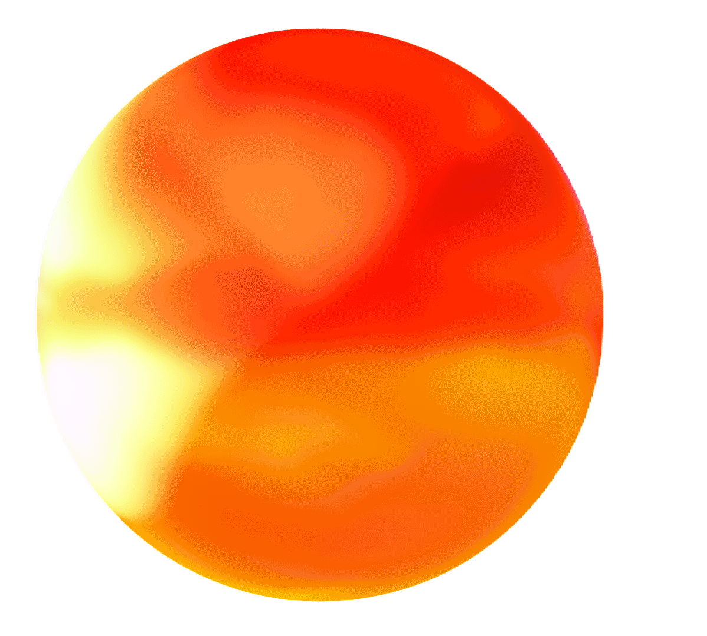
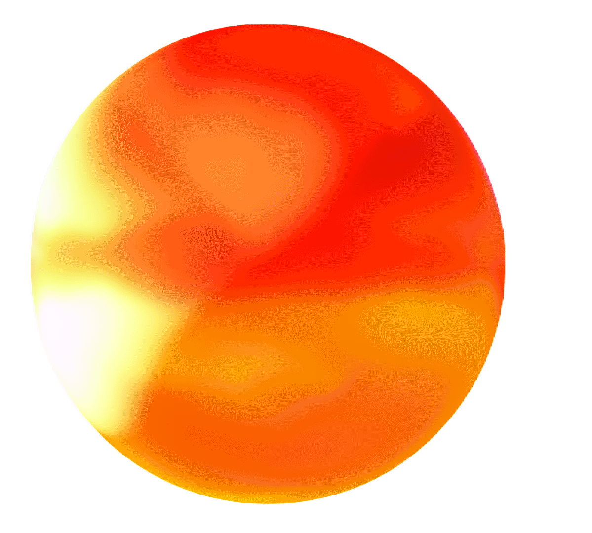
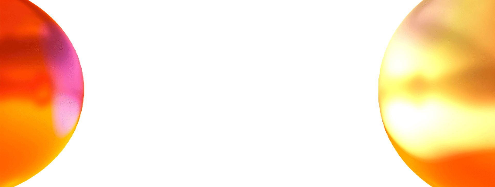
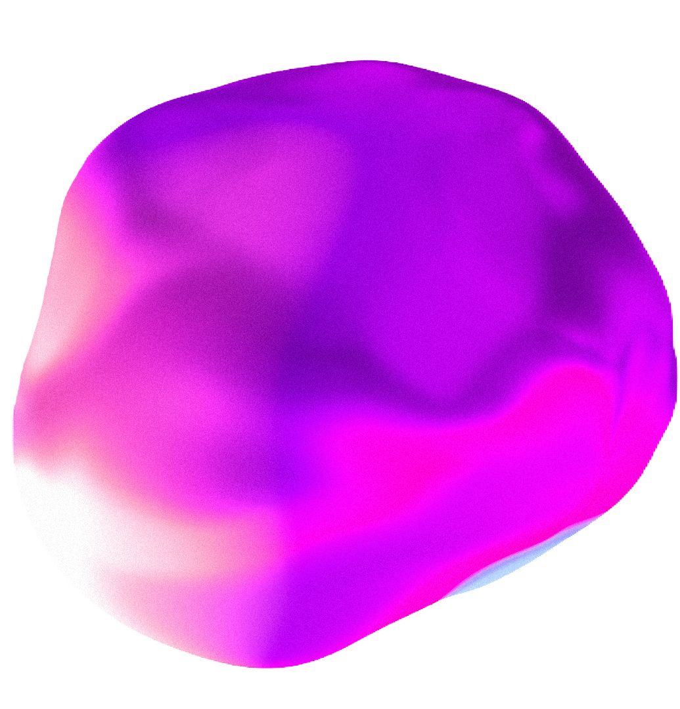
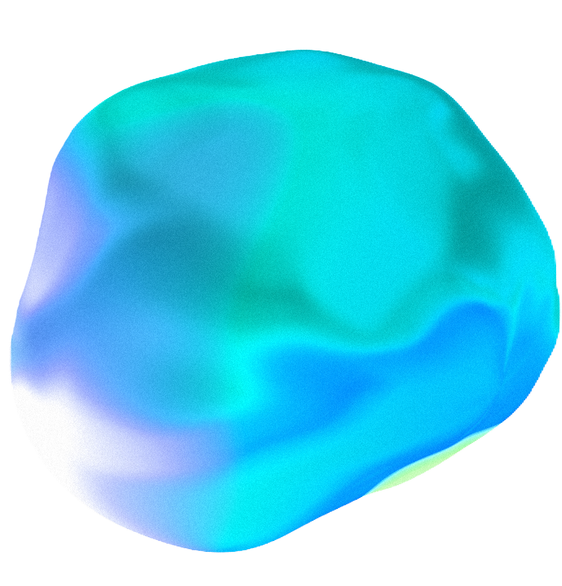
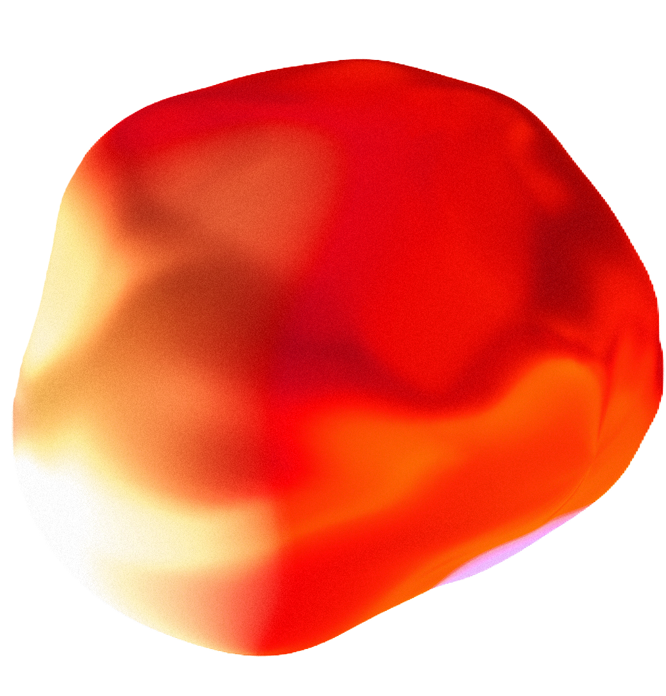
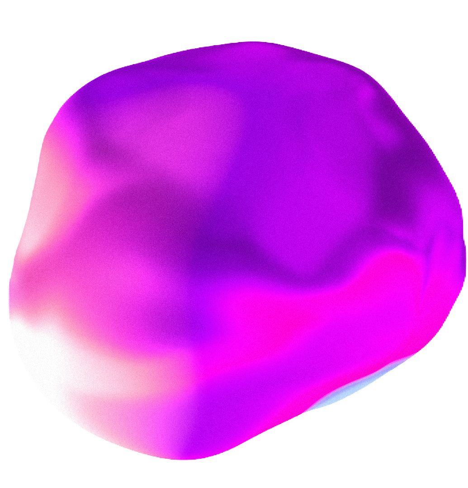
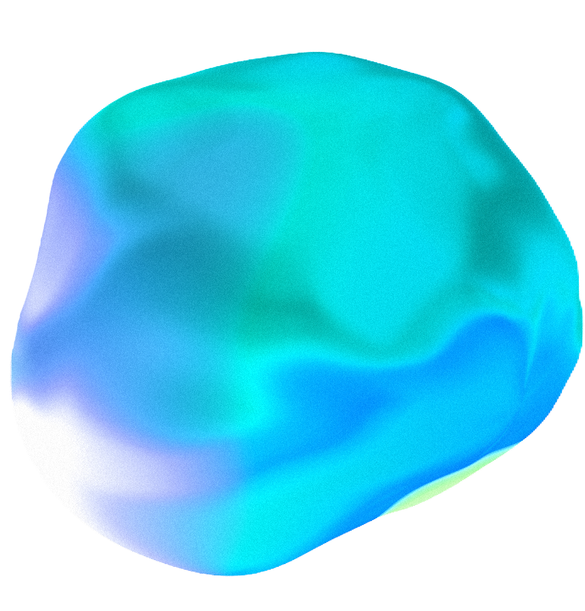
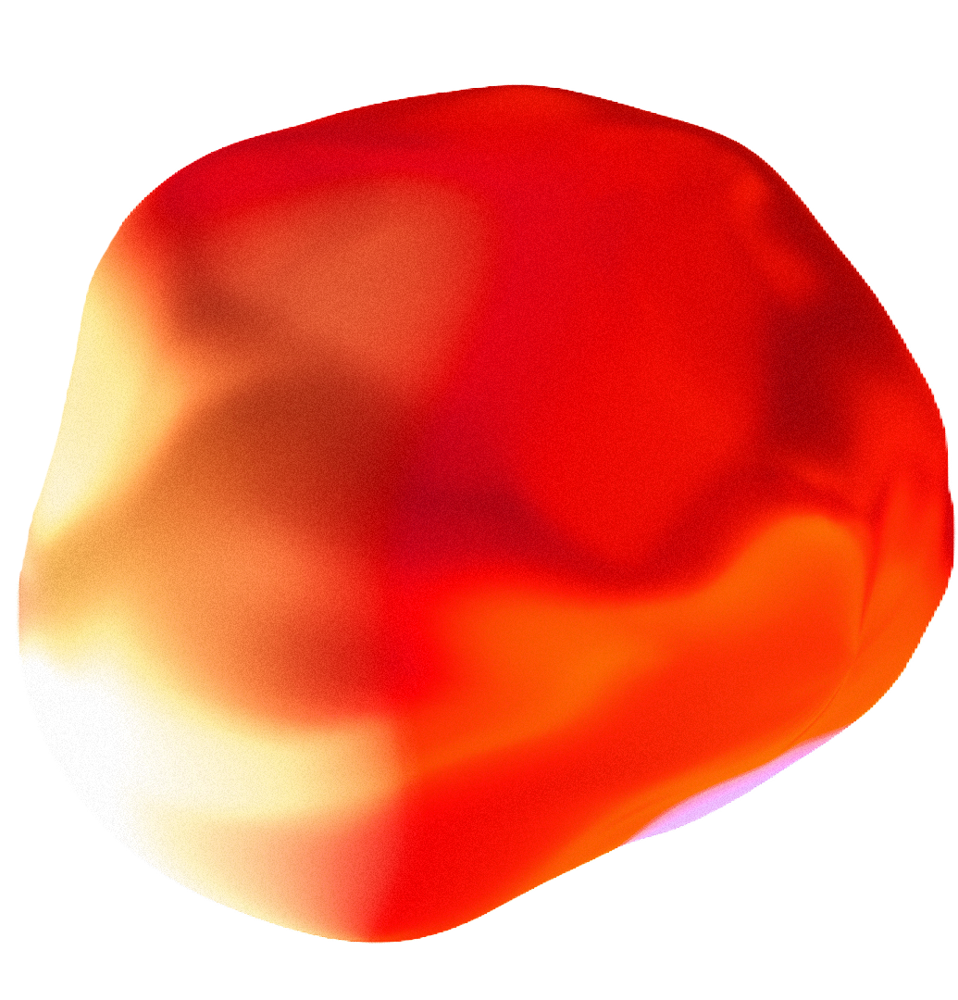

Концепция
Инсталляция
Пространство

1989 — 2023
Выставка звука послушайте!
Москва

Концепция
Инсталляция
Пространство
1989 — 2023
Выставка звука послушайте!
Москва


зву
ки
Пространство
Со звуком
ВОЗВЫЩАЮЩИМ
Когда возникают помехи и нарушается связь,
стоит иногда лишь остановиться
и прислушаться Авторская выставка звука «Послушайте!»
помогает остановиться
и прислушаться к себе. Тесное переплетение проводов, мгновенный переход данных
от источника к точке—снова раздается звук
Звук страха, боли, ужаса, гнева и всех тех бессчетных негативных эмоций могут взять верх над сознанием человека. В апреле мы послушаем , чтобы отладить инструменты воспроизведения и восприятия. И ощутим,
как пустое пространство резонирует, вступает
в диссонанс и сливается в гармонии
с средой. Очистимся
от гнева и негатива,
обретем гармонию.
Сублимация шума
Куб боли
Страх одиночества
инст
аля
ции
 







ПРОСТРАНСТВО
уникальной
архитектуры